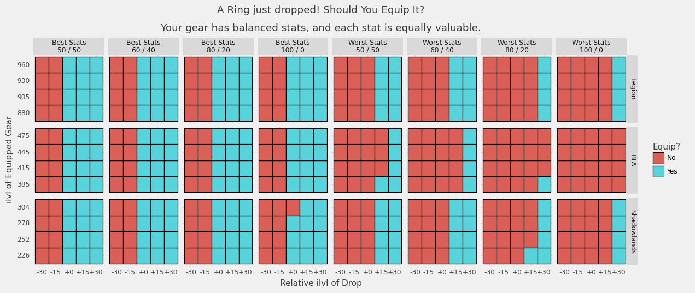

Author: emallson (Eisenpelz-Turalyon NA)
In Battle for Azeroth, Blizzard reduced the rate at which secondary stats scale relative to prior expansions. To the best of our understanding, this change was made in an attempt to eliminate (or at least limit) the scenarios where it was correct to equip lower item level gear to get better stats. While this change was mostly invisible to the average player, coming as it did during the ilvl squish, it has been contentious among the theorycrafting community and the general opinion is that it failed at this purpose.
Recently, we discovered that Blizzard had implemented new diminishing returns on secondary stat scaling on the Shadowlands Beta. From my point-of-view, this change reflects a misunderstanding of the impact of the BFA changes as well as a frankly concerning willingness to layer new, opaque systems on top of an already notoriously opaque game.
Nonetheless, much of my (and the wider community's) concerns are based largely on feelycraft, not concrete analysis. As a result, this week I put together some concrete analysis on when it is valuable to drop ilvl for better stats under each secondary scaling model.
I considered three scaling models, using data collected from the simc codebase
to accurately model them.
In terms of implementation, all three are basically identical: there is a multiplier table that attenuates an underlying exponential scaling formula. The specifics of the multiplier table control how quickly stats grow in each expansion.
The above chart shows the amount of secondary rating on rings compared to the first tier. We can see that Battle for Azeroth is the slowest, with roughly linear growth of secondaries, with items from Ny'alotha having about 40% additional secondaries over Uldir items.
Legion (at least, after the 7.1 rescaling) is faster. The multipliers used leave a slight exponential curve in place, but it is heavily attenuated and only results in 60% stat growth after almost 100 ilvls.
Shadowlands has a very clear change, with stats growing much, much faster than in BFA or post-7.1 Legion. However, Shadowlands also introduces diminishing returns on secondary stats, which are not reflected in this chart. Our concern is that these diminishing returns may lead to awkward gearing choices by introducing scenarios where it is correct to drop ilvl for "bad" status simply because they haven't yet hit the heavier diminishing returns.
This analysis is primarily concerned with answering one simple question: when looking at an item that has just dropped, should you equip it? What if it is an ilvl upgrade? or downgrade? Let's find out.
To evaluate damage properly, we'd need to use a tool like simulationcraft. Rather than attempt to retrofit different scaling models into simc, I have instead opted for a simplified model that should still capture much of the behavior we are interested in.
Let me begin with an example: Keg Smash. Keg Smash is a Brewmaster Monk
ability which has its base damage determined by your Attack Power (defined as
Agility * (1 + Mastery%)). Its damage scales with versatility, increasing the
damage done per cast by 1 + Vers%. Similarly, the average damage over many
casts increases with your critical strike, adding a factor of 1 + Crit% over
the course of a fight. Lastly, the cooldown of Keg Smash is hasted, so the
number of casts you get over the course of a fight is increased by a factor of
1 + Haste%. The average damage of Keg Smash over the course of a fight is:
number of casts * avg damage per cast = Agility * (1 + Mastery%) * (1 + Vers%) * (1 + Crit%) * (1 + Haste%)
Not every ability scales with every stat, but this kind of scaling on key rotational abilities is very common. I am going to use this formula, with a small tweak, as a proxy for actual damage done over the course of a fight. Specifically:
Avg Damage = Mainstat * (1 + MasteryValue * Mastery%) * (1 + VersValue * Vers%) * (1 + CritValue * Crit%) * (1 + HasteValue * Haste%)
The introduction of these StatValue parameters lets us model specs that scale
better or worse with particular stats. Using Brewmaster as an example again: BrM
has a fixed rotation, and so gets very limited value from Haste. Thus,
HasteValue would be close to 0. At the same time, Mastery doesn't impact any
of the procs that BrM (and, to a lesser extent, other tanks) have come to rely
on for damage, so it would be less valuable than either Crit or Vers.
Then we can estimate the gain in damage done by upgrading an item by subtracting
the Avg Damage for some baseline gear from the Avg Damage of the upgraded
gear.
The next question, then, is how to determine the stats in use. That process goes like this:
Avg Damage using those stats. This is the baseline damage.Avg Damage using the base stats plus the item stats minus the stats of the old item in that slot. This is the upgraded damage.upgraded damage - baseline damageWe can repeat this process with different items at different ilvls and stat breakdowns to figure out when it is valuable to drop ilvl in order to improve stats.

The main question we want to answer is this: should you equip an item that just dropped? The chart above shows when it is beneficial to equip an item that has dropped with various different ilvls and stat breakdowns.
Note that most items in modern WoW have two stats on them. You'll get a Crit/Haste piece or a Mastery/Vers piece, and only rarely a pure-Crit or Crit/Haste/Mastery/Vers piece. The items that are generated for this use two stats (either your best two or worst two) in one of several combinations.
Your best and worst stats are determined by calculating which stats have the largest gain per point relative to your equipped gear. (Technically: this is done via automatic gradient calculation)
For example: the top-left section of the grid uses your two best stats in a 50/50 split. As you move right, the skew gets more extreme until you hit the 5th box and we switch over to items with your worst stats.
This chart in particular shows that for each system, if you have even stats and balanced gear you should always take an ilvl upgrade. This is the kind of behavior that the devs have stated they're looking for.
Main-slot pieces like chest and legs are fairly stable. Even with fairly large skew on your stats, it is virtually never valuable to drop ilvl under any model.

Interestingly, when you have heavily skewed secondary values but balanced stats, it can be worth dropping ilvl on main pieces---but only under the BFA model and only in extreme cases.

This pattern of "ilvl > stats" appears to remain constant on pieces that have mainstat (so: everything but rings---we aren't touching trinkets here).
Rings, though. Rings get wild.
Lets start off with an easy one: your stats are all equally valuable, and your gear has balanced stats. That means you should always take ilvl on rings, right? Well...

In Legion, you would have gone with ilvl in all but the most extreme cases. From BFA onward, though, it is often worth dropping ilvl (especially in later tiers). The changes in Shadowlands appear to fix this, with it virtually always being worthwhile to upgrade an item with a higher ilvl version.
As an aside: Shadowlands appears to use 13 ilvls between difficulties instead of 15. That is not reflected in these charts, but the principle remains similar.

When you have skewed gear and slightly skewed secondaries, it becomes clear that the BFA changes were counterproductive---but that the Shadowlands changes actually improve the situation substantially even over the Legion model. In particular: in Legion it was worth dropping ilvl in to get your best stats, and worth skipping ilvl upgrades to avoid your worst stats. In BFA, the number of cases in which it was correct to drop ilvl for better stats increased.
Let's take a moment to return to another time: 2015. Hellfire Citadel has released, and inside you can find rings that would seem out-of-place in modern WoW. Why? Well, they have primary stat on them. In fact, rings in Warlords (and possibly prior, this is hard to tell) were identically scaled to bracers now. As a result, we can check what the results look like for bracers and see how things would behave if the Legion change (removing mainstat from rings) were reverted:

Keep in mind that the Legion section here is actually identical to Warlords ring scaling. This, in fact, is the behavior that Blizzard states they would like to see on gear now: it is always correct to equip ilvl upgrades, and never correct to equip ilvl downgrades. Further, this behavior holds even when your stats are heavily skewed!


Interestingly, when you reduce the ilvl gap between items the problem appears again under all models---though it is certainly least-bad in Shadowlands. Note that this only occurs in practice due to Warforging, which indicates that the frequency with which people dropped ilvls for better stats in Legion and BFA may, in fact, be a byproduct of the Warforging/Titanforging system giving us many items with small gaps between them.

While I had initially been quite skeptical about the value of the secondary DR system, this analysis has largely assuaged my concerns. Specifically, I was concerned about two things: (1) that this change may increase the situations where it was correct to ignore ilvl, and (2) that this might have awkward breakpoints where the answer to "should I ignore ilvl?" changed. Neither of these appear to be the case.
In additional, while I did not include information on which stats were "best" within each cell of the charts above, examination of the logs used to generate them reveals that the DRs are not severe enough to devalue the secondaries your spec might naturally want. That is: if Crit and Haste are good stats for you, they remain good stats even with the presence of DRs.
That said: I am still somewhat concerned about the introduction of yet another
opaque system to the game. Battle for Azeroth introduced another, similar
opaque system: defensive scaling (i.e. armor, block, Stagger) getting reset
every tier by the increase of an underlying constant (K). This system has been
frustrating not from a theory PoV, but from that of a player. However, the
effects of that system (resetting tank power every tier, which honestly sucks)
are quite different from the apparent effects of this system.
Nonetheless, it would be a huge boon for the community if the design team were more open both about the changes they make to underlying systems and the goals they hope to achieve in making said changes.
On the whole, I think that this system is likely to be a major step up from the Battle for Azeroth system. It may also be an improvement on the Legion system, and there is something to be said about preserving jewelry as a means to customize secondaries over the pre-Legion of jewelry simply being low-budget items like bracers. I'm also happy that we're going to see much faster secondary growth, as the snails pace of secondary growth in Battle for Azeroth led to every tier feeling very same-y (though, as a tank, the resets on tank power certainly didn't help). At this stage, I am mostly curious and want to see how this plays out.
The code for the charts presented in this post can be found at on emallson's GitHub. emallson is a theorycrafter for Brewmaster Monks, writes for Peak of Serenity, and maintains the WoWAnalyzer code for Brewmasters. emallson is currently wearing a 440 ring from Battle of Dazar'alor in his main set, with multiple 475 rings rotting in his bags.